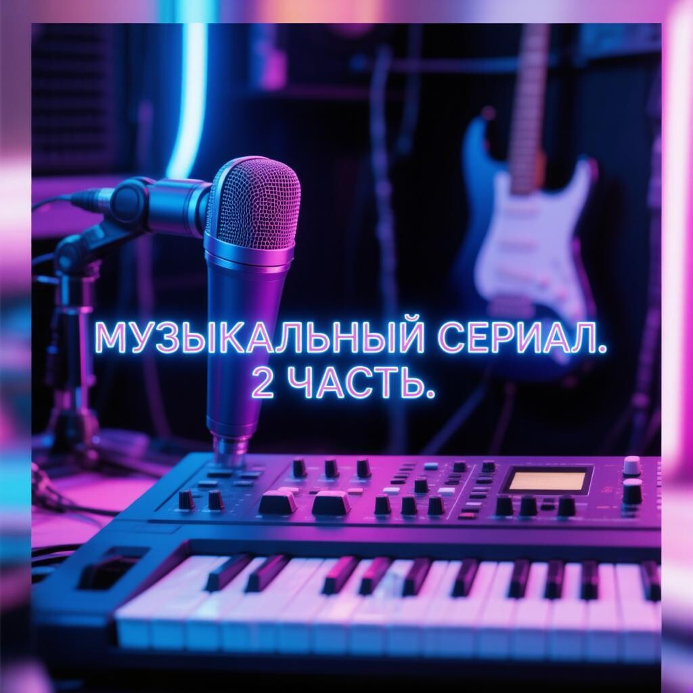

Музыкальный сериал – Часть 2
Как укротить Suno AI и почему я проиграл войну с её ограничениями

В первой части мы создали сильный, эмоциональный текст про остывающий кофе и ночную тоску. Задача этого раунда — заставить искусственный интеллект спеть его не как бездушный робот, а как живой музыкант в прокуренном баре. Да так, чтобы за душу цепляло.
Больше полезного про нейросети — простым языком, каждый день в нашей группе ВКонтакте
Перейти во ВКонтакте →🚩 РАУНД ПЕРВЫЙ: ОЖИДАНИЕ VS РЕАЛЬНОСТЬ
Ну что ж, я вставил текст в Suno, выбрал стиль музыки, инструменты и нажал «Сгенерировать». Из пяти сгенерированных версий три оказались полным шлаком, от которого потянуло скукой с первых минут. Звучало это как караоке в придорожном кафе: писклявый электронный голос (будто нейросеть наглоталась гелия) и унылое монотонное бубнение, словно ИИ читает с листа первый раз. Но оставшиеся две... Это был разрыв. Музыкант по «клику» ИИ идеально поймал грусть и выдал плотный, аналоговый звук. Я уже был готов праздновать победу, как вдруг случился главный кошмар новичка. Ровно на 1:00 минуте трек просто оборвался посреди фразы. Бездушная машина безжалостно выдернула шнур из розетки. Тут и начались мои танцы с бубном, чего я только не пробовал: менял настройки стиля, сидел и структуру промпта но увы ничего не вышло.
🛠 СКРЫТАЯ АРХИТЕКТУРА ТРЕКА: ТЕГИ, О КОТОРЫХ МОЛЧАТ ИНСТРУКЦИИ
Нейросети плевать на ваши знаки препинания. Чтобы заставить её сделать паузу или взрыв в припеве, сам текст нужно зашивать системные маркеры в квадратных скобках [...]. Вот базовые теги управления, которые я раскопал. Они реально помогают ИИ соблюдать структуру в первую минуту.
• [Intro] – задаем правильный старт (например [Acoustic guitar intro]).
• [Bridge] – переходный мостик перед финалом для смены темпа.
• [Guitar Solo] – заставляем ИИ сделать инструментальную паузу.
• [Dramatic Pause] – создание тишины перед взрывным припевом.
• [Outro] и [Fade out] – правильное, красивое затухание звука в конце.
⚠️ СЕКРЕТНЫЙ LEVEL-UP: РЕДКИЕ ПРОМПТЫ ДЛЯ ЭКСПЕРИМЕНТОРОВ
Обычные связки жанров из официальных гайдов выдают банальный цифровой звук. Если вы хотите, чтобы трек звучал как виниловая пластинка из гаража, а не бездушный MP3-файл, используйте скрытые инженерные теги. Добавьте эти редкие маркеры прямо в поле стиля (Style of Music):
• [Live lo-fi session, warehouse acoustics] — для эффекта живого выступления и эха полупустого помещения.
• [Fuzz distortion, warm tube saturation, 1970s analog tape] — для глубокого, «грязного» аналогового звучания гитар.
• [Cinematic dark ambient, slow building tension, sub-bass drops] — для создания кинематографичной, давящей атмосферы перед вокалом.
Но помните: даже самые редкие маркеры не спасут, если в поле стилей забита стандартная попса из 90-х. Вот мои проверенные рабочие связки для глубокого погружения:
indie rock, melancholic, male gritty vocals, acoustic guitar, slow driving beat— ламповый инди-рок.
acoustic folk, raw emotional female vocals, fingerstyle guitar, intimate, ambient reverb— пронзительная акустика.
⚠️ ТЕХНИЧЕСКИЙ КАПКАН SUNO: ПОЧЕМУ ОФИЦИАЛЬНЫЙ ОБХОД ЛИМИТА — ЭТО ЛАЖА
В платном тарифе Suno v3.5 есть жёсткий лимит на трек. Мои два варианта, которые реально зацепили, были длиной ровно в 1:00 минуту. Когда трек обрывается на первой минуте, кажется, что всё пропало. Но в системе есть официальная кнопка Extend (Продолжить). Инструкции в интернете обещают магию: выставляешь таймкод (например, 0:50), вставляешь кусок стиха, жмешь кнопку и получаешь бесшовное продолжение. Я честно признаюсь: долго мучился с этим прямо со смартфона. Пытался тыкать мелкие кнопки, экран съезжал, логика ломалась. В какой-то момент у меня так подгорело, что я психанул. Но самое обидное было потом.
Когда я всё-таки заставил эту функцию работать, магия исчезла. Всё, что пело после этой первой минуты, вообще перестало цеплять. Нейросеть как будто потеряла душу: сбился темп, голос стал как бы другим, а былая атмосфера прокуренного бара рассеялась, превратив трек в унылую кашу. Эту минутную отсечку на платном тарифе я так и не победил. В итоге у меня на руках есть идеальный минутный кусок, который пробирает на мурашки, и полное бессилие перед алгоритмами Suno, которые ломают песню на второй минуте.
💬 ВОПРОС К ЗНАТОКАМ
Я не вижу смысла описывать звук текстом и доказывать на словах, насколько сильно понравилась первая минута. Вы можете послушать этот получившийся минутный трек (и то, где всё безжалостно сломалось на второй минуте) живьем — аудиозаписи уже висят в закрепе моего Telegram-канала «ЖИВОЙ ИИ». Заходите, включайте и оценивайте сами. А теперь вопрос к меньшинству профи, кто плотно работает со звуком и нейросетями: как обойти это ограничение в одну минуту без потери качества и изменения голоса? Кто смог заставить Suno выдать цельную и цепляющую песню до самого конца — подскажите в комментариях, как вы это сделали?
Перейти во ВКонтакте «ЖИВОЙ ИИ»